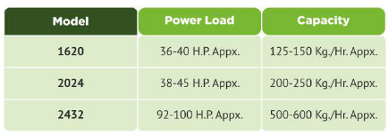

SKU: SAL-M-6
Two Stage Grinding Machine
| Sub-Category | Spices Processing |
| Material | Stainless Steel |
| Brand | Salvin |
Two Stage Grinding System is ideal for the material which needs to grind in 2 operation. Generally this kind of material is grinding two time in single machine but now we designed this system to prevent double labour work. In this system you can grind corse and fine grinding continuously with the help of two machines and Inter connected conveyors. this system is ideally use in spices Grinding and ayurvedic Product Grinding
Rate this product:
Click a star to submit your review